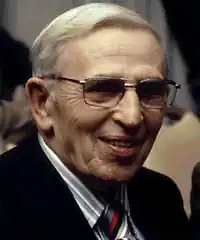

САЙМАК, Кліффорд Доналд (Simak, Clifford Donald — 03.08.1904, м. Мілвілл, шт. Вісконсін — 25.04.1988, Міннеаполіс, шт. Міннесота) — американський письменник-фантаст.
Народився у сім'ї фермера. Після закінчення школи навчався в університеті штату Вісконсін у Медисоні, але не закінчив його. Працював учителем, а потім репортером і редактором відділу новин у міській газеті Міннеаполіса, де прожив усе життя. З 1977 р. — на пенсії.
Перша публікація Саймака — оповідання "Світ Червоного Сонця" (1931), як і подальші ранні проби пера, не мали успіху, тому Саймак на деякий час залишив літературу і знову повернувся до журналістики. Остаточний вибір на користь фантастики Саймакзробив наприкінці 30-х pp., після знайомства та творчого співробітництва з головним редактором американського часопису "Естаундінґ сторіз", що спеціалізувався на науково-фантастичній літературі, Дж. Кемпбеллом. Останній став своєрідним "хрещеним батьком" для цілої когорти визначних письменників (А. Азімова, Л. Дель Рея, Р. Хайнлайна, Г. Каттнера, К. Мур), котрі визначили жанрові пріоритети та тематичні напрями розвитку не лише американської, а й світової фантастики. Перший роман Саймака "Космічні інженери" ("Cosmic engineers", 1939) варіює вже традиційну на той час тему космічних пригод, змальованих в жанрі т. зв. "космічної опери", тобто авантюрно-розважального, близького до масової літератури тематичного відгалуження фантастики. Проте вже наступні романи Саймака були відзначені більшою глибиною та серйозністю проблематики, схильністю до філософських узагальнень, роздумів про долю та ймовірні перспективи розвитку людської цивілізації. У романі "Час знову і знову" ("Time and Again",1951) Саймак порушує ідею рівноправності та братства галактичних цивілізацій різної форми життя, зокрема на "органічній" та "механістичній" основах. Сюжетну основу роману "Кільце навколо Сонця. Розповідь про завтрашній день" ("Ring Around the Sun. A Story of Tomorrow", 1952-1953) складає опис паралельних світів та мутантів, які руйнують економіку Землі за допомогою "вічної" технології. Літературне визнання і широку популярність Саймаку приніс роман "Місто" ("City", 1952), відзначений престижною Міжнародною премією в жанрі "фентезі". Роман композиційно побудований як цикл з восьми сюжетно завершених новел, у яких ідеться про майбутнє людства. Лейтмотивом крізь увесь роман проходить легендарна сага про родину Вебстерів, останніх "хоронителів" Землі після тотального переселення людства на Юпітер. На Юпітері людство трансформується у фантастичних істот-стрибунців — вищу форму розумного життя, а на Землі з'являється нова цивілізація — розумних Собак, які, заборонивши убивства живих істот, прагнуть об'єднати усіх земних тварин в єдину сім'ю. Основну ідею твору висловлює один із головних героїв роману, старий робот Дженкінс, вихователь (упродовж кількох тисячоліть) багатьох поколінь Вебстерів, а пізніше — цивілізації Собак: "Уже п'ять тисяч років, якщо не більше, на Землі не було убивств. Сама думка про вбивство викорінена із свідомості... Так воно краще, мовив собі Дженкінс. Краще втратити цей світ, ніж почати знову вбивати". Уже в перших романах достатньо чітко окреслюється головна тема творчості Саймака — тема науково-технічної та духовної зрілості людства, його готовності до зустрічі із представниками неземних цивілізацій (недаремно у критиці Саймака часто називають "співцем контакту"). "Здатність співпереживати і розуміти для Саймака головний критерій моральності, найвищий принцип стосунків між різними галактичними расами, — пише російський дослідник творчості письменника В. Гопман. — Тому головна для письменника тема — контакт, зустріч землян із позаземною цивілізацією. "Прибульці як сусіди" — ця назва однієї із книг Саймака може бути поставлена епіграфом до усієї творчості письменника. Вирішуючи цю тему з гідною подиву сюжетною винахідливістю, Саймак неодмінно прагне ствердити думку, що за наявності доброї волі та прагнення жити у мирі будь-які галактичні раси зможуть домовитися між собою, яким би химерним не був їхній зовнішній вигляд (а інопланетяни Саймака напрочуд різноманітні: різнокольорові бульбашки, розумні квіти, маленькі чорні чоловічки, байбаки, кегельні кулі, прозорі вулики на колесах)". Тема контактів між представниками різних галактичних цивілізацій залишилася основною і в творчості Саймака 60-х pp. У контакт із представниками паралельних світів вступає головний герой роману "Уся плоть — трава" ("All Flesh is Grass", 1965). У романах "Принцип перевертня" ("The Werewolf Principle", 1967) і "Заповідник гоблінів" ("The Goblin Reservation", 1968) змальовані різні рівні контакту з чужоземним розумом: з інопланетянами, а також і з "власними" міфологічними істотами, штучно створеними людьми за допомогою генної інженерії. В окремих творах Саймака цього періоду, присвячених темі контакту, звучать і песимістичні мотиви. Головний герой роману "Що може бути простіше від часу" ("Time is the Simplest Thing", 1961), як і інші люди із екстрасенсорними здібностями, внаслідок небажання порозумітись і переслідування з боку "звичайних" людей змушені перебратися на іншу планету. Конфлікт між людьми та інопланетянами змальований і в романі "Майже як люди" ("They Walked Like Men", 1962). Один із найкращих творів Саймака цього періоду — роман "Транзитна станція" ("Way Station", 1963). Головний герой роману, ветеран американської Громадянської війни Інек Волліс, отримавши від інопланетян безсмертя, виконує спеціальну місію доглядача галактичної транзитної станції, призначеної для контактів представників різних космічних цивілізацій. Волліс намагається подолати непорозуміння та ворожість співвітчизників, готуючи їх у такий спосіб до часу відкритого вступу людства в Галактичну федерацію. У 70-80-х pp., за спостереженнями критиків, продуктивність Саймака дещо знизилася, хоча його фантастика, як і раніше, була і є популярною, про що свідчать премія "Неб'юла" за оповідання "Грот танцюючого оленя" ("Grotto of the Dancing Deer", 1981). Серед творів цього періоду виділяються збірка оповідань "Найкращі новели Саймака" ("The Best of Clifford D. Simak", 1975), романи "Світ-кладовище" ("Cemetery World", 1973), "Діти наших дітей" ("Our Children's Children", 1974), "Планета Шекспіpa" ("Shakespeare's Planet", 1976), "Зоряний спадок" ("A Heritage of Stars", 1977), "Братство талісмана" ("The Fellowship of Talisman", 1978), "Гості" ("The Visitors", 1980), "Де живе зло" ("Where the Evil Dwells", 1982), "Шлях вічності" ("High Way of Eternity", 1986). Саймак — лауреат багатьох національних та міжнародних літературних премій, він удостоєний Американською асоціацією письменників-фантастів звання "Великий Магістр премії "Неб'юла".